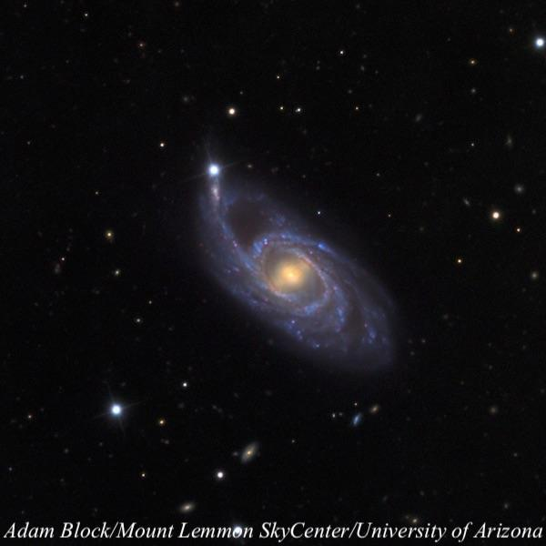
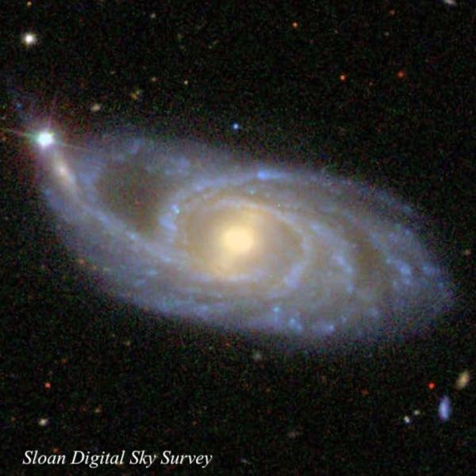
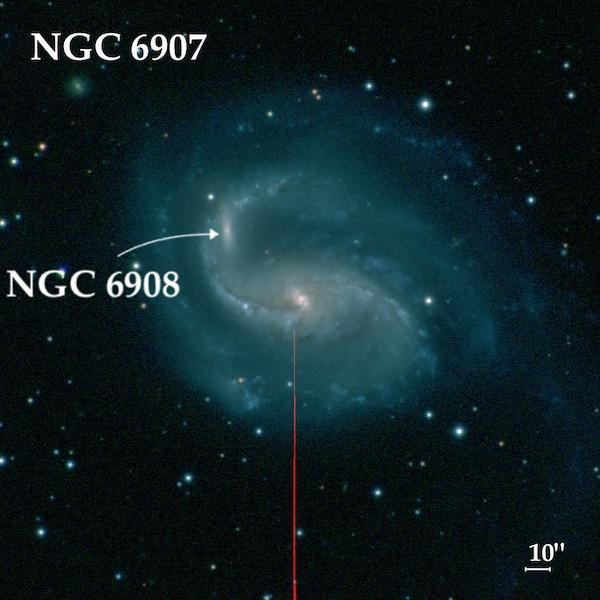

NGC 151: M51-type system or not?
- Name: NGC 151
- Aliases: NGC 153 = MCG -02-02-054 = LGG 008-003 = PGC 2035
- RA: 00h 34m 02.5s
- Dec: -09° 42' 20" (2000)
- Constellation: Cetus
- Type: SB(r)bc
- Size: 3.7'x1.7'
- P.A.: 75°
- Magnitudes: V = 11.6, B = 12.3
- Surf Br: 13.4 mag/arcmin²
NGC 151 is an interesting spiral located just 1.3° south of NGC 157, another OOTW less than two years ago (Dec. '20) by Dragan. It was discovered by William Herschel very early on in his deep sky exploration -- 13 Dec 1783. In fact, it was found only a month and a half after he began observing with his 18.7-inch speculum reflector. Initially, he attempted sweeping horizontally but he found that method very inefficient and on the night of December 13th he switched to sweeping vertically on the meridian and discovered NGC 151! His published description (based on two observations) reads, "faint, large, much extended, between two considerably bright stars [visible in the finder]."
His early positions were quite rough, but astronomers Eduard Schönfeld, Heinrich d'Arrest and Father Secchi later measured accurate coordinates, so the NGC position is correct. Interestingly, Édouard Stephan observed the galaxy on 18 Sep 1873 (probably searching around Herschel's poor position) and commented it was "tres belle". He measured an accurate position on 28 Oct 1878 and reported it as new in his 9th discovery list (#1). As a result the galaxy was assigned a second NGC designation -- NGC 153.
The first photograph was taken at the Helwan Observatory near Cairo, Egypt in 1919-20 with the 30-inch Reynolds reflector. It was described as "4' x 1.5', bright almost stellar nucleus; spiral with at least three long, much curved arms in what are almost stellar condensations. One of the arms appears to wind completely around the nucleus, and possibly extend to more than 3' from it to a star in p.a. 190°."

NED lists a large number of redshift-independent distance measures with a median figure of 135 million light years. The redshift of z = .0125 (recessional velocity 3732 km/sec) suggests a distance closer to 170 million light years using a Hubble constant of 70. Let's split the difference and use an approximate distance of 150 million light years. In this case the diameter of the galaxy (3.7') translates into a diameter of 160,000, so this spiral is much larger than the Milky Way and perhaps even M31. Although it has a prominent yellow bar (indicating a population of older stars), the roots of the spiral arms are noticeably offset from the ends of its bar by about 15° downstream -- not an unusual feature in barred spirals.
A prominent eastern arm appears to extend towards a mag 12.5 star and an apparent companion, forming an M51-type system. But the companion -- known as 2MASX J00340814-0941481 -- has a redshift of z = .016 with a recessional velocity of 4963 km/sec, over 1000 km/sec greater than NGC 151. So, it appears likely that it resides in the background and its location is a mere coincidence. Still, it is a close enough difference that a 2002 paper titled “A Kinematic Study of M51-Type Galaxies” included NGC 151 in the study. Furthermore, the arms appear as if they were pulled out of the plane of the galaxy, suggesting a prior interaction with another galaxy. Hopefully, there will be further study of this galaxy to resolve the question.
I viewed NGC 151 in my 24-inch in 2016 and recorded the following notes:
"Bright, fairly large, contains a very bright boxy rectangular central section that is slightly elongated NNW-SSE (this is the central bar and nucleus), encased by a fairly low surface brightness halo extended at least 2:1 E-W, ~2.7'x1.2'. A mag 12.5 star is at or just off the ENE edge (1.7' from center). A superimposed companion is at the tip of the eastern spiral arm of the galaxy, very close southwest of the mag 12.5 star. It was glimpsed but only occasionally popped clearly."
I was also able to observe it through Jimi's 48", along with Howard Banich, in late October 2019 and found it quite impressive.
Very bright striking spiral with an inner ring and a long, drawn out spiral arm! Overall, at 610x the galaxy extended over 2:1 WSW-ESE, ~3.2' x 1.4'. Very strongly concentrated with a very bright core that gradually increased to the center. Immediately west of the core was a noticeably darker gap and a lower contrast gap was east of the core. These gaps were outlined by bright arcs, each about 90°, creating a partial oval ring surrounding the core.
The western half of the halo had a low surface brightness and extended at least 1.5' from the center. I noticed a brightening at the extreme west end of the halo. Checking the SDSS, this is a split spiral arm, separated beyond a darker dust lane.
A thin, long spiral arm was attached at the south side of the core (along the inner ring) and was easily seen gently curving northeast, extending directly to a mag 12.6 star! A small, faint knot, at most 10" diameter, was easily seen near the end of this arm, very close to SSW [16"] of the mag 12.6 star. This "knot" is a companion galaxy (2MASX J00340814-0941481), though its redshift is 1/3 greater than NGC 151, so it may be in the background.

I assume you would need about an 18-inch scope to catch the companion, but the galaxy itself is certainly visible in an 8-inch scope. Of course, while in the area check out NGC 157 to its north. Two excellent spirals just a field or two apart.
As always,
"Give it a go and let us know!
Good luck and great viewing!"
Steve's follow-up — October 2nd, 2022, 11:28 PM
Reminds me of the situation with NGC 6908 (in Capricorn), which was long assumed to just be a brighter condensation in a spiral arm of NGC 6907, until it was shown to be a superimposed galaxy at the same distance.

Steve's follow-up — October 3rd, 2022, 04:41 PM
Swift's position (mainly RA) for NGC 153 was poor but his comment "star near north-following" pins down the equivalence with NGC 151.
After the NGC was published, Austrian astronomer Rudolph Spitaler wrote an article in 1892 that concluded NGC 153 was equivalent with 151 (observations by others including d'Arrest are mentioned). If you can read German, the article is here. Dreyer mentioned Spitaler's result in the IC I notes a couple of years later.
Strangely, in the 1964 Reference Catalogue of Bright Galaxies (RC1) notes section, de Vaucouleurs stated the mag 12.5 star at the end of the northeast arm was NGC 153!